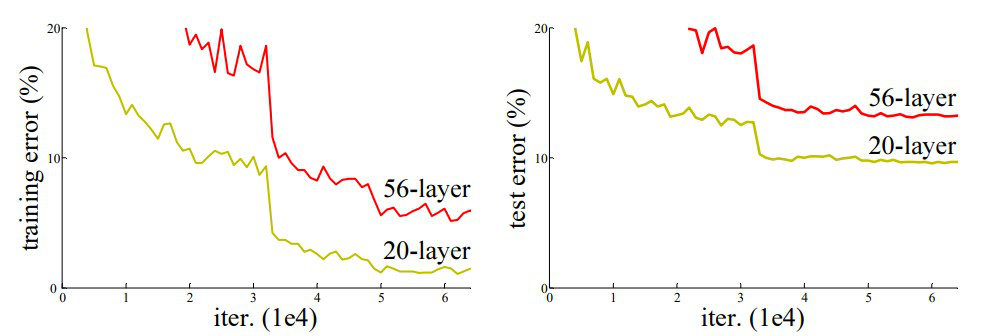
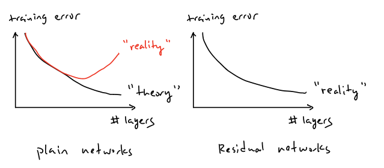
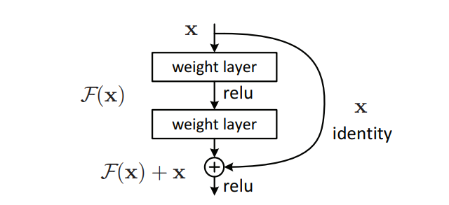
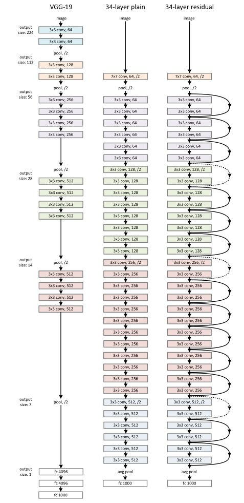

Deep Residual Learning for Image Recognition
Deep learning folklore says that depth equals power. If a neural network becomes more expressive as we add layers, then the obvious strategy should be to keep stacking them. In theory, a deeper model should always be at least as good as a shallower one, because it could simply learn to copy the shallower solution. Yet in practice, researchers observed something counter-intuitive: after a point, adding more layers made training worse, not better. Accuracy dropped, and sometimes the model failed to converge to a good solution at all.
For a long time, this question was difficult to study because very deep networks simply did not train. Gradients would vanish or explode during backpropagation, preventing learning from even getting started. Over time, this issue was largely addressed through better weight initialization schemes and normalization layers such as Batch Normalization. With these techniques, networks with dozens of layers began to converge reliably using standard SGD.
Once gradient flow was no longer the bottleneck, a deeper problem became visible. Even when training was stable and gradients flowed correctly, deeper plain CNNs often showed higher training loss than their shallower counterparts. This meant the issue was no longer about generalization or overfitting, but about optimization itself. The ResNet paper starts from this observation and asks a sharper question: if gradients are fine, why does depth still make optimization harder? The rest of the paper is an answer to that question.

At first glance, the behavior of deep networks seemed to violate basic intuition. If a deeper model has strictly more parameters and expressive capacity than a shallower one, its training error should never increase. In the worst case, the additional layers could learn identity mappings and reduce the deep network to an equivalent shallow model. However, experiments with very deep plain CNNs showed the opposite: as depth increased, training error increased as well. This meant the network was not failing to generalize, it was failing to even fit the training data.
This phenomenon became known as the degradation problem. Crucially, degradation is not caused by vanishing or exploding gradients. Those issues prevent learning altogether, whereas degradation appears even when training is stable and loss decreases normally at first. Instead, degradation reflects the growing difficulty of optimizing very deep nonlinear transformations. As depth increases, forcing each layer to actively transform its input makes it harder for the network to preserve useful representations, even when the optimal solution would be to leave them unchanged.

The core idea of ResNet can be written using a simple reformulation of what each block is asked to learn. Let the input to a block be x,
and let H(x) represent the ideal mapping that a stack of layers should compute. In a plain CNN, the layers are forced to learn H(x)
directly. ResNet instead defines a residual function F(x) such that F(x) represents the difference between the desired mapping and the
input. The block output is then written as y = F(x) + x, where x is added back through a skip connection.
This small change has a large impact on optimization. If the best mapping a block can learn is simply the identity, then H(x) becomes equal
to x, which implies F(x) = 0. Driving residuals toward zero is much easier than forcing deep nonlinear layers to
approximate identity mappings on their own. This allows information to flow cleanly across many layers, while still letting the network learn meaningful
transformations where needed, preventing degradation as depth increases.

To understand why residual learning works in practice, the paper compares three networks with similar depth and computational cost. The key difference between them is not how many layers they have, but how information flows through those layers:

Left: the VGG-19 model [40] (19.6 billion FLOPs) as a reference.
Middle: a plain network with 34 parameter layers (3.6 billion FLOPs).
Right: a residual network with 34 parameter layers (3.6 billion FLOPs). The dotted shortcuts increase dimensions.
VGG-19 follows a straightforward design where depth is increased by stacking 3×3 convolutions and periodically reducing spatial resolution with pooling. Every layer is required to actively transform its input, which makes optimization increasingly difficult as depth grows.
The 34-layer plain CNN matches the depth and filter layout of ResNet-34 but removes all shortcut connections. Despite having similar capacity, this model shows higher training error, demonstrating that depth alone does not guarantee better optimization.
The 34-layer residual network keeps the same structure as the plain model but adds identity shortcuts to each block. These shortcuts allow features to pass through unchanged when needed, making deep optimization stable and preventing degradation.